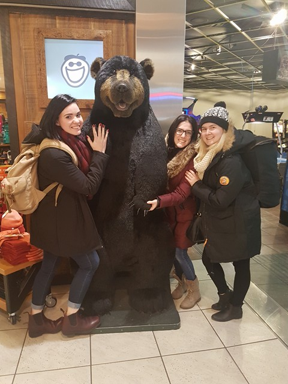
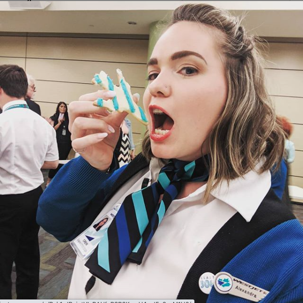

About Me
 
My name is Alexandra but I've gone by Al since the day I left high school; which for me was almost
10 years ago. I've done a lot since including going to film school, travelling the world and working at my dream job.
Sadly due to the Covid-19 pandemic
the travel industry has been nearly bankrupt and my career as a flight attendant has been put on hold. In the meantime I've decided to pursue soemthing that interested me the last time I went to college, which was programming. Now I have to opportunity to combine two things that interest me greatly: video games and programming.
Things about myself that might be interesting to you would be that I have a great and undying love of hockey, specifically the Pittsburgh Penguins. I try to go to as many of their games as possible, I will and have travelled ridiculous distances to watch hockey.
Another passion of mine is of course travel and I've been to many places already and when it is possible to travel again there are still many places I wish to go. I've been to Asia, Europe, North America, Central America and most of the Caribbean. While Antartica seems unlikely, I'd like to get to Afria and Australia soon.
Contact Me!
Follow Me!